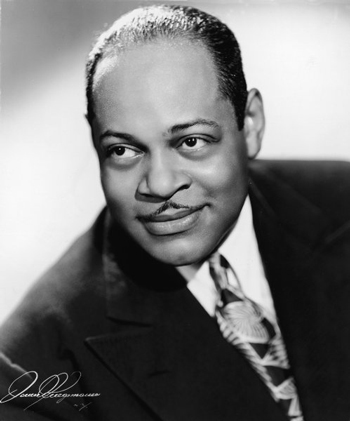
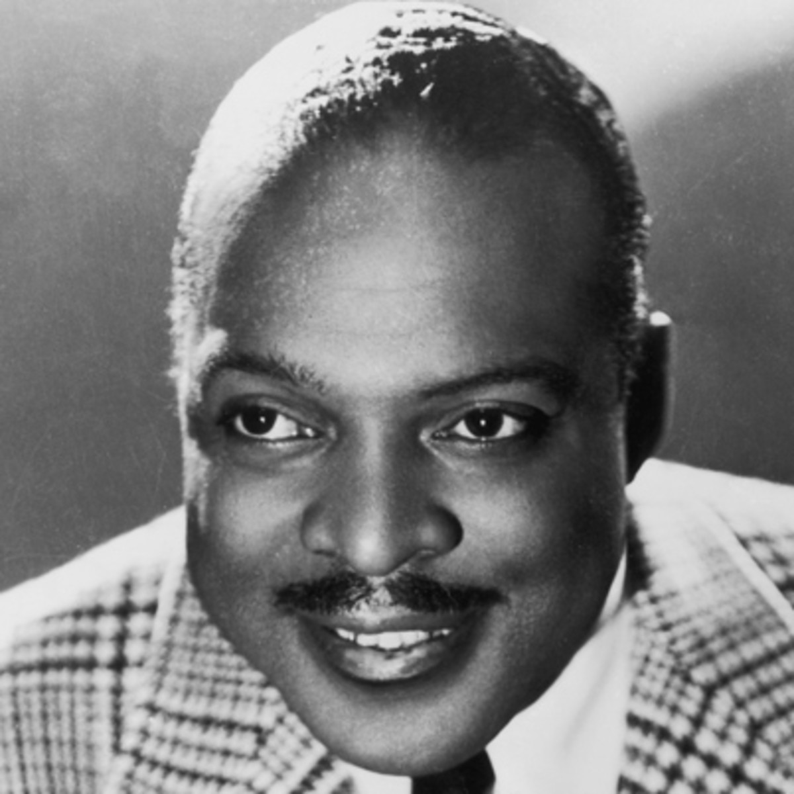
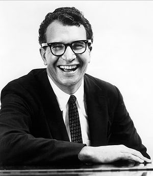
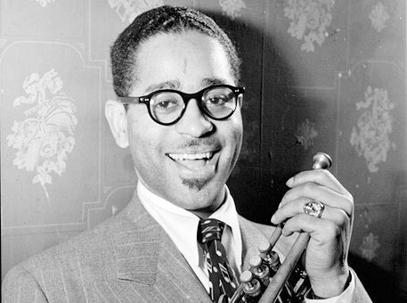
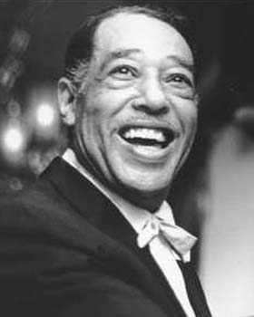
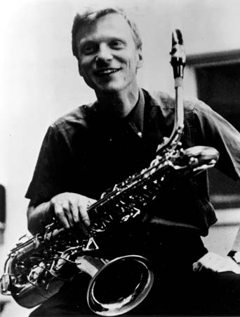
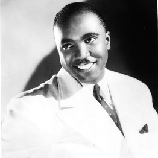
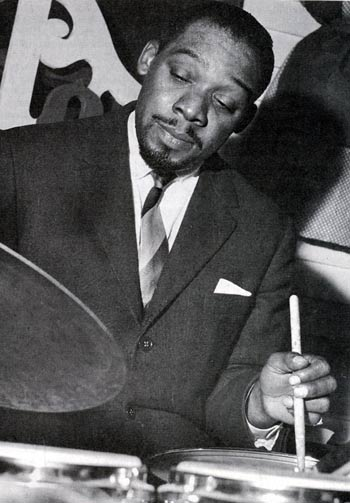
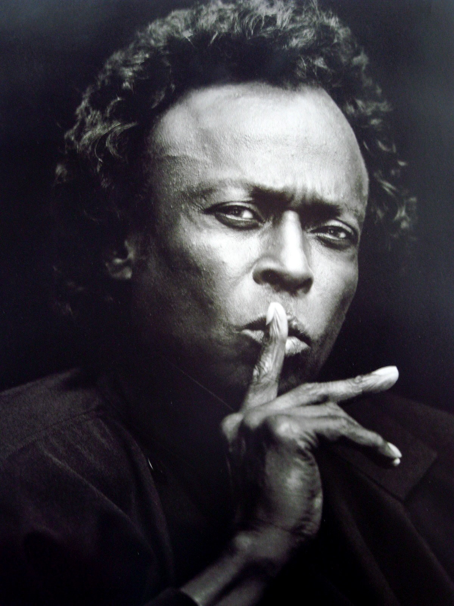
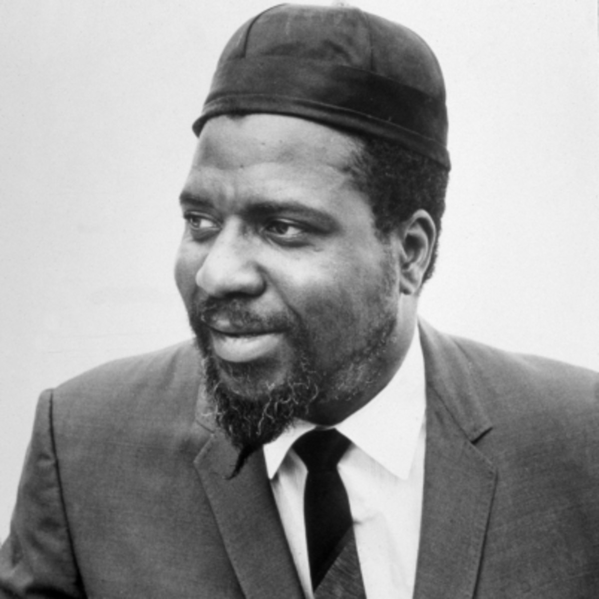
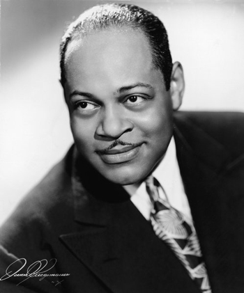
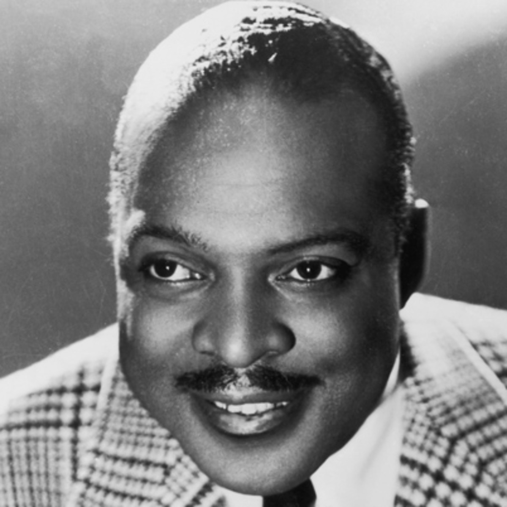
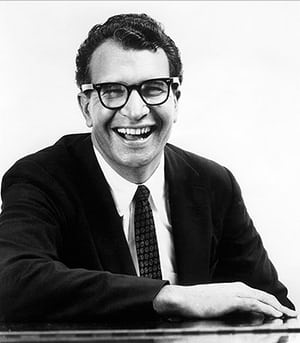
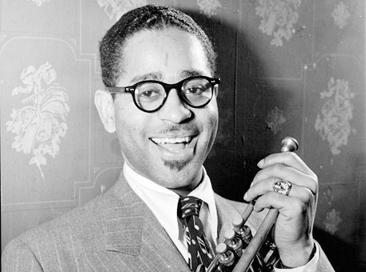
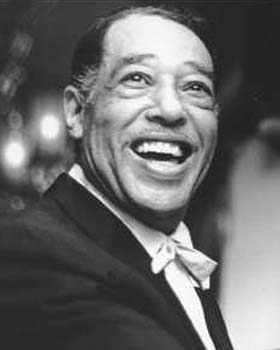
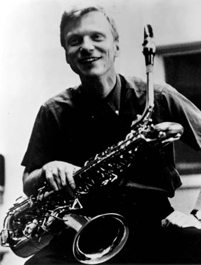
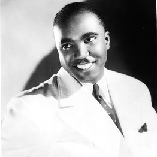
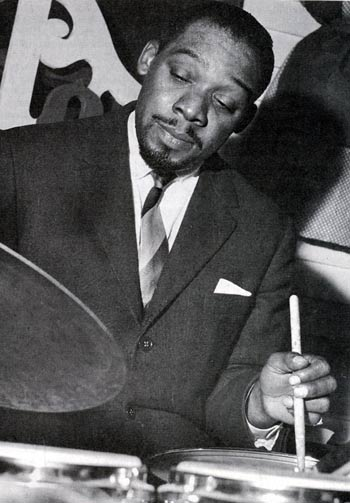
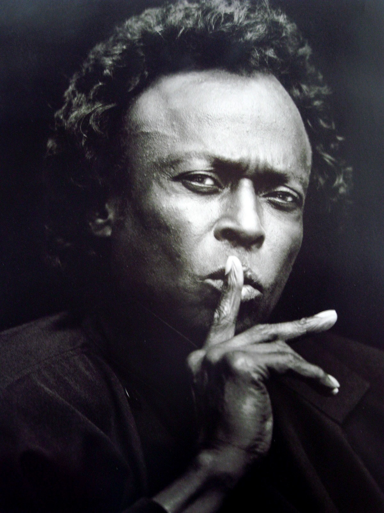
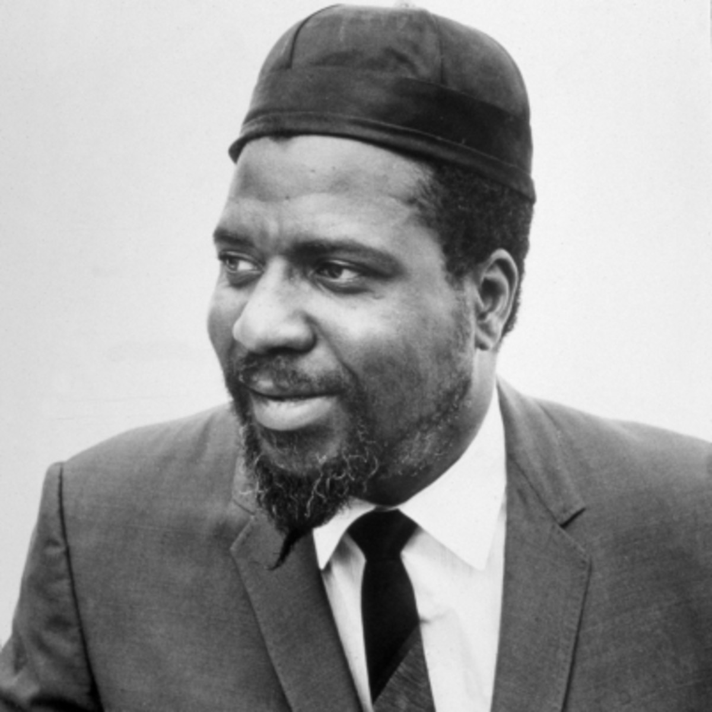
The origins came from the late 19th to early 20th century and was thought to be of American and European classical music mixed with African and slave folk songs. It has evolved many times in any different ways throughout the years with each performers personal interpretation and improvisation. 1866, the slave trade had brought nearly 400,000 Africans to North America, with them they had brought their own style of music. The Africans would primarily use single-line melody and call-and-response pattern. The preceded New Orleans jazz name before 1890 was called Afro-Latin music, similar to what was played in that the time. In the post civil war period after 1865, African Americans were able to obtain military bass drums, snare drums and fifes, and an original African-American drum and fife music emerged, featuring tresillo and related syncopated rhythmic figures.
During the twentieth century, the musical pot-pourri of Negro blues, work-songs, and half-remembered rhythms brought over on slave ships from West Africa was mixed with ragtime and the hymns and brass band music of Europe. The African Americans later learned to play the popular brass band music in their own unique manner, embellishing the melodies, creating new sounds out of the old, making the music move with a new, exciting rhythm called swing.
The New Orleans bands generally used an instrumentation of cornet or trumpet, trombone, clarinet, banjo and drums. The first three instruments were known as the front line and the last three as the rhythm section. The front line lead by the cornet used a crude but effective three-voice polyphony, underlined by the syncopated beat and basic harmonies of the rhythm section. These early bands were marching bands, and it was not until the 1920s that the piano could be added, and the more agile but less portable string bass. The guitar came to be generally favoured in preference to the strident and less subtle banjo and the saxophone became more popular as well, although the creator of the sax didn’t intend to play it with vibrato.
In the 1930s, New York became the centre of the jazz scene and still is to this day. The Virtuosos of jazz had started to apear, Art Tatum, Benny Goodman and Coleman Hawkins. The age of Swing had truly arrived, and jazz attained a popularity it had not previously, nor ever again, achieved. Big bands ruled the day, Duke Ellington, Count Basie, Jimmie Lunceford and the bitter sweet voice of the exquisite Billie Holiday inspired a whole galaxy of lesser torch singers.
In the early 1940s, a small community of musicians grew tired the endless riffs and repetitions of the popular big bands. They evolved a new musical language of their own called Bebop or Bop. Of course the critics and most of the older, established musicians panned this style, but as is so often the case in an artistic revolution, they lived to eat their words. The new jazz appeared to be a complete break with the music of the 1930s.
The world’s music is deeply indebted to these men of vision! Charlie Christian, Dizzy Gillespie, Thelonious Monk, Miles Davis, Bud Powell, J.J. Johnson, Kenny Clarke, and above all to the incredible genius of Charlie Parker - one of the greatest improvisers to have been produced in the short and chaotic history of jazz. A new generation of jazz musicians arose who were required to have a thorough knowledge of chord progression and substitution, as well as great command of their instruments before improvisation could become articulate and creative within the context of music.
During the 1950s, various styles arose. The cool style of Miles Davis, the piano-less Gerry Mulligan sound, the polite neo-Baroque sounds of the Modern Jazz Quartet, the hard-bop school of Art Blakey, the Jazz Messengers, and the clever superficialities of Dave Brubeck’s experiments with time signatures. But by now the jazz musician had become aware of the role as a creative artist, and the split between jazz and popular entertainment widened. The earlier jazz had been a functional music. It was played at funerals, parades and even political campaigns in New Orleans, and in the 1920s and 1930s it was used mainly as an accompaniment for dancing.
Now a listening audience had emerged, and the music was taken seriously, especially by some over picky and prejudiced jazz writers and musicologists who dissected the body of jazz rather as if it were a corpse and not a vital, compulsive form of self-expression. But jazz had extended its emotional range. Now we have jazz for every mood: loud and extrovert, romantic, introspective, nostalgic, happy, satirical and a thousand gradations in between. Jazz has come of age.